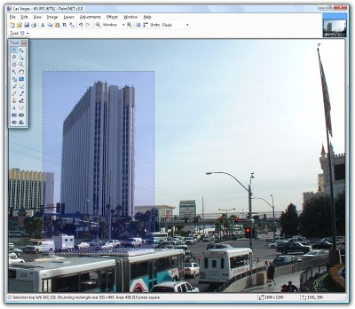

There are three shape selection tools:
You may use this to define a rectangle or square selection region.
You may use this to draw a freeform selection region.
You may use this to draw an ellipse or circle selection region.
These tools are the primary methods for selecting an area of the image for modification, deletion, copying, or cropping. The basic use of these tools is simple, and is similar to the methods used for drawing shapes with the Shape Tools.
Simply draw a selection by using the left mouse button and dragging the mouse around until the shape is how you want it. To remove the selection you may either single-click anywhere while a selection tool is active, or you may use the Edit → Deselect menu item (also available in the Toolbar).
When a selection is active on the image, a dashed outline will be drawn to indicate what area is selected. If one of the selection tools is active, there will also be a blue highlight applied to the selected area. When you switch to another tool, the blue highlight will be removed so that you may get better color accuracy.
In addition, all drawing is confined to the area you have selected. This includes effects and adjustments. This can be very useful if you want to confine your drawing to a specific area of the image.
These tools also allow you to alter a selection in one of four different combination modes: subtraction, addition, inversion, and intersection. The first three modes are also known as exclusion, union, and exclusive-or ("xor"). For a quick reference to these commands, see Keyboard & Mouse Commands. Also, selections may be moved, resized, and rotated: see Move Tools for more information.
In order to create a new selection, or to replace the currently active selection, just draw with the left mouse button. The behavior will be similar to the shape tools.
There are also five different selection modes:
This is the default selection mode. Any new selection replaces the previous selection.
You may hold down the Shift key while using the Rectangle Select or Ellipse Select tools to constrain the shape to be a square or a circle, respectively.
The following circle selection was made using the Ellipse Selection tool:
A new selection is combined with the previous selection. This allows you to easily select two areas of the image that are not connected to each other, or extend a selection to adjacent areas. The following selection was made by drawing a circle selection using the Ellipse Select tool, followed by drawing a square using the Rectangle Select tool:
To add on to an existing selection, simply hold down the Ctrl key while drawing a selection.
An overlapping new selection is removed from the previous selection. This lets you carve out parts of the selection that you are not interested in, such as selections like the following, which was accomplished by drawing one circle with the Ellipse Select tool, and then drawing another circle inside of it:
To remove portions from an existing selection, hold down the Alt key while drawing a selection.
The overlapping portion between a new selection and a previous selection is maintained. The following example was obtained by drawing an overlapping circle selection and square selection:
You can utilize intersect mode by holding down Alt and the right mouse button (instead of the left mouse button) while drawing a selection.
Active areas of the selection become inactive, and vice versa. This allows you to create selections like the following, made using the Ellipse Select and Rectangle Select tools:
You can utilize inversion mode by holding down Ctrl and the right mouse button (instead of the left mouse button) while drawing a selection.
In the following 3-part example, a picture was taken in Las Vegas, and then the tall building on the left was selected using the Rectangle Select tool:
Rectangle Select used on left building
The flag on the right of the image was added to the selection by holding down the Ctrl key while using the Rectangle Select tool
Parts of the selection were removed in order to confine the selection to just the building and flag. This was accomplished using the Lasso Select tool and holding the Alt key to carve out selection areas